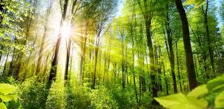

Indian Forest
Exploring the Wonders of Indian Forests: A Journey Through Nature's Masterpieces India, with its diverse landscapes and climates, is home to some of the most vibrant and ecologically significant forests in the world. From the lush rainforests of the Western Ghats to the arid woodlands of the Thar Desert, Indian forests are a treasure trove of biodiversity and natural beauty. This blog takes you on a journey through India’s magnificent forests, exploring their ecological importance, unique flora and fauna, and ongoing conservation efforts.